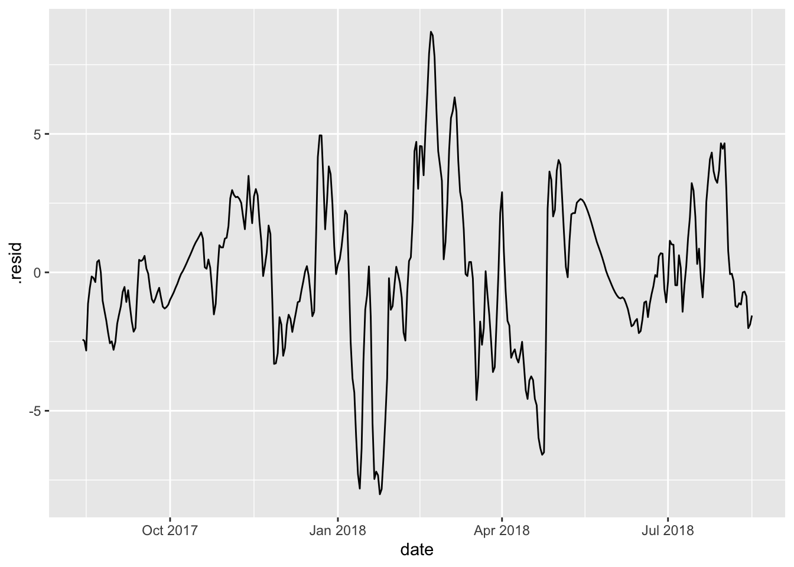
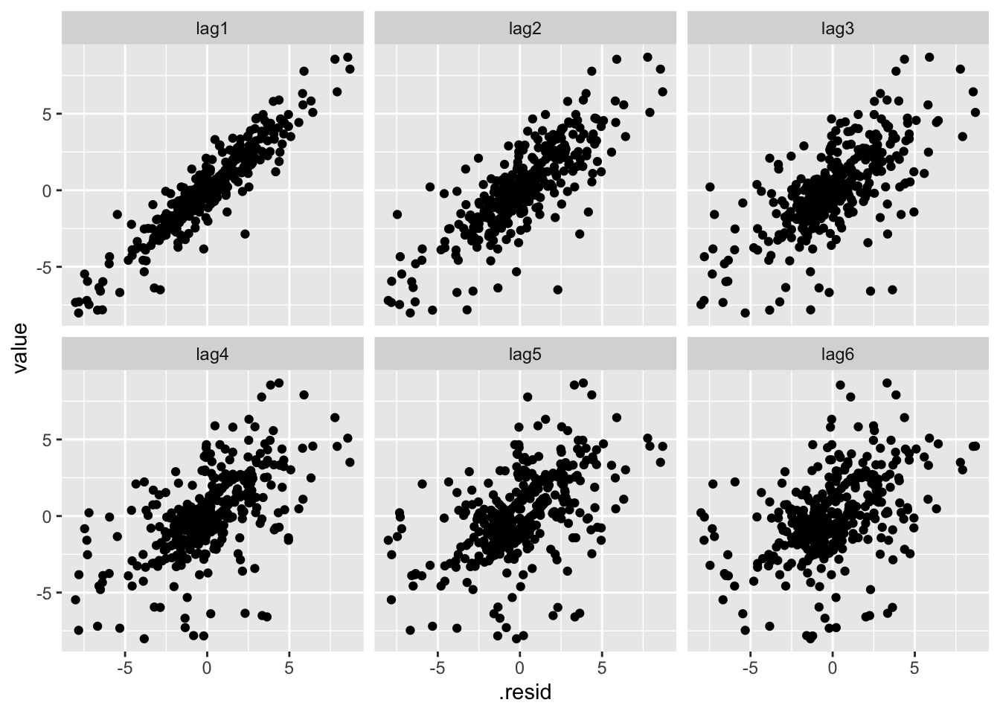
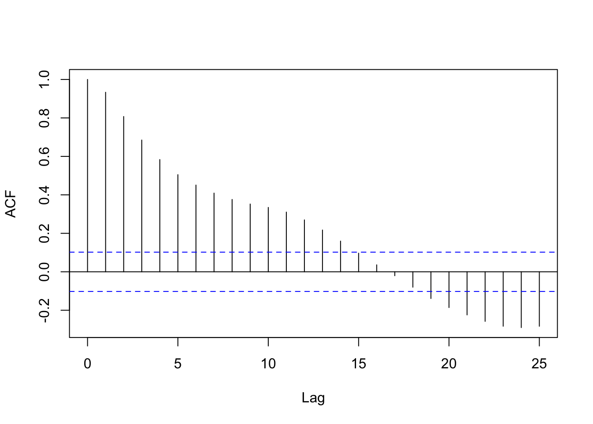
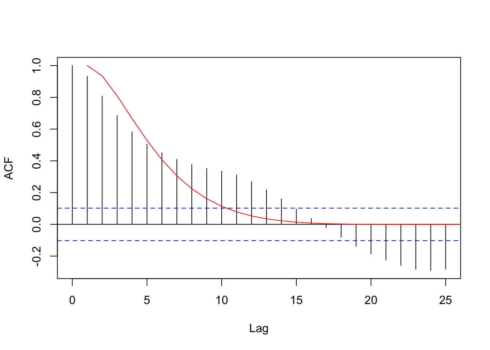
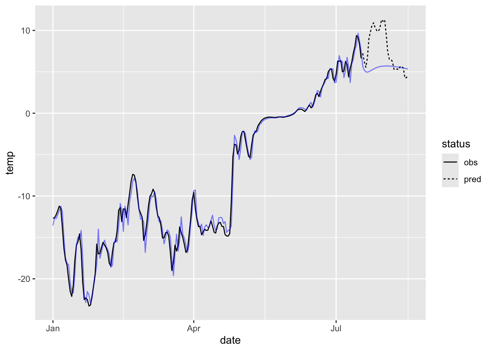
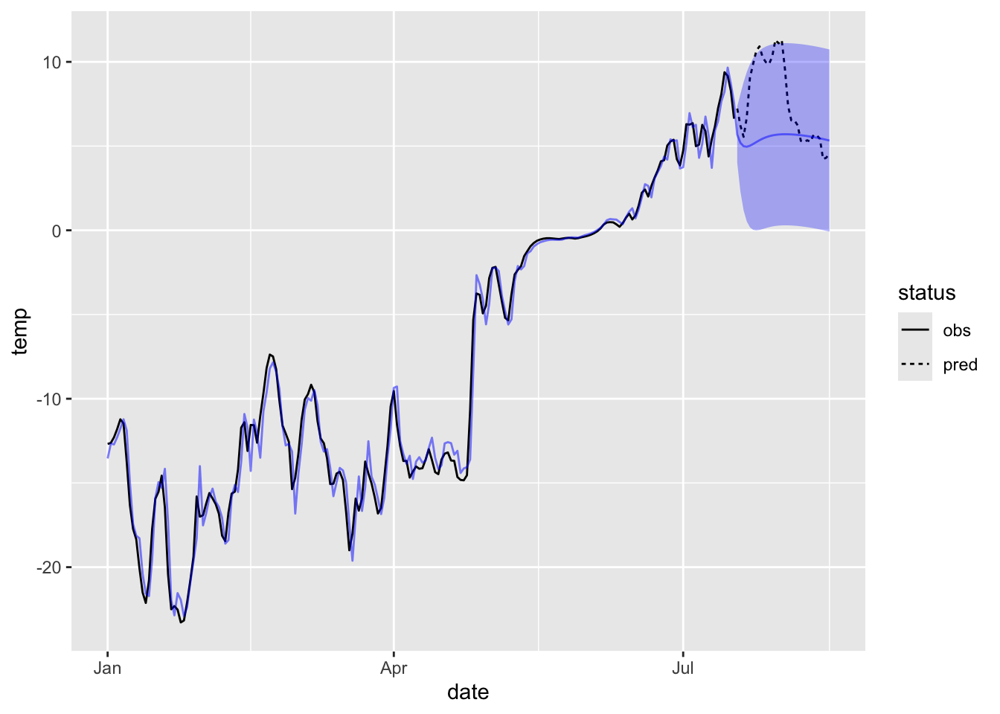

library(tidyverse)
library(lubridate)
library(forecast)
library(fda)
url <- 'https://raw.githubusercontent.com/pstat197/pstat197a/main/materials/labs/lab8-forecasting/data/soiltemp-200cm.csv'
soil <- read_csv(url) %>%
dplyr::select(-year, -elev) %>%
filter(!str_starts(site, 'SHA'))Regression with AR errors
In this lab you’ll see how to develop and then fit a regression model with AR errors.
Objectives: select AR order for an error model using exploratory diagnostic techniques; fit a regression model with AR errors and generate forecasts for future series.
Setup
Action
Open RStudio and set up a new script in your lab directory. Copy and paste the code chunk below and execute once.
You may need to install the forecast package.
Site selection
Although you saw models fit to every site in class, for this lab we’ll just focus on building a model for a single site. You will pick a site and carry out the model-building process; your neighbor(s) will likely pick different sites, so you can compare results with them throughout.
The process you go through in this lab is what would be iterated over every site to reproduce the analysis shown in class.
Action
To start, pick a site to work with using the code chunk below. Check with your neighbor and ensure you choose different sites.
# choose a site at random
set.seed(111522) # comment out!
nsites <- soil %>% pull(site) %>% unique() %>% length()
site_ix <- sample(1:nsites, size = 1)
# filter rows
site_data <- soil %>%
filter(site == unique(soil$site)[site_ix])
# preview
site_data %>% head()# A tibble: 6 × 4
site day date temp
<chr> <dbl> <date> <dbl>
1 B21K-1 226 2017-08-14 3.82
2 B21K-1 227 2017-08-15 3.72
3 B21K-1 228 2017-08-16 3.31
4 B21K-1 229 2017-08-17 4.95
5 B21K-1 230 2017-08-18 5.46
6 B21K-1 231 2017-08-19 5.80AR order selection
Our model (for one site) is
\[ \begin{aligned} Y_t &= f(t) + \epsilon_t \\ \epsilon_t &= \sum_{d = 1}^D \alpha_d \epsilon_{t - d} + \xi_t \end{aligned} \]
There are a few ways to pick the order \(D\), but the most common is to inspect the correlation structure of the residuals.
So first we need to get the residuals.
Action
Copy the code chunk below verbatim and execute. This will fit the regression part of our model and store the residuals along with other model quantities.
# predictor matrix
xreg <- site_data %>%
pull(day) %>%
fda::fourier(nbasis = 4, period = 365)
# response
y <- pull(site_data, temp)
# create a data frame
reg_df <- bind_cols(temp = y,
xreg)
# fit the model
fit <- lm(temp ~ . - 1, data = reg_df)
# obtain fitted values, residuals, etc.
fit_df <- broom::augment(fit) %>%
bind_cols(date = site_data$date)To start, let’s just plot the residual series:
# plot residual series
fit_df %>%
ggplot(aes(x = date, y = .resid)) +
geom_path()
Ideally, this should be (approximately) “stationary”, which means the series has:
constant mean over time
constant variance over time
Action
Plot the residual series for your site and compare with your neighbor.
Discuss: do your residual series look stationary, or close enough? What do you look to in the graphic to make that assessment?
If we plot the residuals against themselves at several time lags, we can observe the correlation decaying gradually.
# plot residuals at various lags
fit_df %>%
dplyr::select(.resid) %>%
mutate(lag1 = lag(.resid, n = 1),
lag2 = lag(.resid, n = 2),
lag3 = lag(.resid, n = 3),
lag4 = lag(.resid, n = 4),
lag5 = lag(.resid, n = 5),
lag6 = lag(.resid, n = 6)) %>%
pivot_longer(-.resid) %>%
ggplot(aes(x = .resid, y = value)) +
geom_point() +
facet_wrap(~ name)
We can capture this pattern succinctly by computing the correlation coefficient at each lag. This is called the (sample) autocorrelation function.
resid_acf <- acf(fit_df$.resid, plot = F)
plot(resid_acf, main = '')
If you’re curious, try computing a few correlations ‘by hand’ and checking that they closely match resid_acf (they won’t match exactly).
Check your understanding
Discuss with your neighbor:
- What do the heights of the vertical lines in the ACF plot show?
- What does the ACF plot capture about the residuals?
Now, any autoregressive process will have some autocorrelation even at distant lags, regardless of the order.
To select the order, the partial autocorrelation is used – the correlation at a given lag after adjusting for previous lags.
resid_pacf <- pacf(fit_df$.resid, plot = F)
plot(resid_pacf, main = '')
Aside
The partial autocorrelations are computed iteratively by:
- Computing the correlation between \(e_t\) and \(e_{t - 1}\)
- Removing the part of \(e_t\) explainable based on \(e_{t - 1}\) and obtaining an adjusted residual \(\tilde{e}_t = e_t - \beta_1 e_{t - 1}\)
- Repeat 1-2 for lags 2, 3, …, replacing \(e_{t - h}\) with \(\tilde{e}_{t - h}\)
The simplest heuristic for AR order selection is to choose as \(D\) the number of significant partial autocorrelations.
Action
- Compute and plot the PACF for your residual series.
- Determine the order of autoregression: how many partial autocorrelations are outside the confidence bands?
- Compare with your neighbor.
Fitting an AR model
We could at this point fit our full model in one go. However, let’s instead start by fitting the error model directly to the residuals.
# fit error model
fit_resid <- Arima(fit_df$.resid,
order = c(2, 0, 0),
include.mean = F,
method = 'ML')From the fitted model, we can obtain the theoretical autocorrelation and compare it with the sample:
resid_acf_fitted <- ARMAacf(ar = coef(fit_resid),
lag.max = 25)
plot(resid_acf, main = '')
lines(resid_acf_fitted, col = 'red')
Forecasting based on this model is straightforward. There is a predict method:
predict(fit_resid, n.ahead = 5)$pred
Time Series:
Start = 369
End = 373
Frequency = 1
[1] -1.2430817 -0.9610074 -0.7241247 -0.5333799 -0.3846943
$se
Time Series:
Start = 369
End = 373
Frequency = 1
[1] 0.8432472 1.4539958 1.9105181 2.2271447 2.4347909But the forecast package returns predictions a bit more neatly arranged:
forecast(fit_resid, h = 5) Point Forecast Lo 80 Hi 80 Lo 95 Hi 95
369 -1.2430817 -2.323746 -0.1624169 -2.895816 0.4096524
370 -0.9610074 -2.824378 0.9023632 -3.810787 1.8887719
371 -0.7241247 -3.172552 1.7243027 -4.468671 3.0204219
372 -0.5333799 -3.387581 2.3208208 -4.898503 3.8317434
373 -0.3846943 -3.505004 2.7356159 -5.156797 4.3874083Now we could mimic what was done in our first class on this data and add the residual forecasts to predictions from the regression model, but it is much more efficient to fit a single model (rather than two) that captures both the regression and the error part.
Takeaway
An autoregressive model (and time series models generally) may look like it’s a model describing the conditional mean of a series in the present given the past. However, it’s really about the correlation structure.
Regression with AR errors
Now that we’ve identified the error model we can fit the full model simultaneously using maximum likelihood.
We would typically write this model not as a two-level model but as:
\[ Y_{t} = f(t) + \epsilon_t \;,\qquad \epsilon_t \sim AR(2) \] Writing the model more explicitly in terms of the basis expansion for \(f\):
\[ Y_{t} = \beta_0 + \sum_{j = 1}^4 \beta_j f_j(t) + \epsilon_t \;,\qquad \epsilon_t \sim AR(2) \]
This can also be fitted using Arima(). Because we want to do forecasting, let’s hold out the last month or so of data.
# determine a point at which to cut the series
cutpt <- nrow(xreg) - 30
# training series
y_train <- y[1:cutpt]
x_train <- xreg[1:cutpt, ]
# fit the model
fit_full <- Arima(y_train,
order = c(2, 0, 0),
xreg = x_train,
include.mean = F,
method = 'ML')
broom::tidy(fit_full) %>% knitr::kable()| term | estimate | std.error |
|---|---|---|
| ar1 | 1.4097044 | 0.0467220 |
| ar2 | -0.5111631 | 0.0467999 |
| const | -94.4390457 | 8.6277969 |
| sin1 | -89.1625507 | 8.4652746 |
| cos1 | -116.7946606 | 8.7652209 |
| sin2 | -6.9569801 | 8.7021730 |
| cos2 | 8.8501268 | 8.4618960 |
Why no mean?
The argument include.mean = F tells Arima() not to ‘de-mean’ the residual series, i.e., fit an intercept.
The reason for this choice is that the regressors include a constant term, so an intercept is already being fit at the level of the regression model. Including another intercept produces an unidentifiable model.
If you’re curious, try changing to include.mean = T. R should throw an error.
Action
Compare the (non-AR parameter) estimates from this model with the coefficient estimates assuming \(iid\) errors that we fit in selecting an error model (i.e., fit ). Are they close? Why are they different at all?
Forecasts
Now, to forecast, we need to supply future regressor values. Luckily for us, the regressors are deterministic functions of day of the year, so that is easy. (If we had covariates, however, this might be a potential problem.)
# testing series
y_test <- y[(cutpt + 1):nrow(xreg)]
x_test <- xreg[(cutpt + 1):nrow(xreg), ]
preds <- forecast(fit_full,
h = nrow(x_test),
xreg = x_test)
preds %>% as_tibble() %>% head()# A tibble: 6 × 5
`Point Forecast` `Lo 80` `Hi 80` `Lo 95` `Hi 95`
<dbl> <dbl> <dbl> <dbl> <dbl>
1 5.68 4.58 6.77 4.01 7.35
2 5.19 3.30 7.09 2.30 8.09
3 4.99 2.50 7.48 1.19 8.80
4 4.96 2.06 7.86 0.526 9.40
5 5.02 1.85 8.19 0.177 9.87
6 5.12 1.79 8.45 0.0267 10.2 To plot the forecasts, bind the fitted values and predictions with the original data and visualize:
fig_forecast <- site_data %>%
dplyr::select(date, temp) %>%
bind_cols(pred = c(fit_full$fitted, preds$mean),
status = c(rep('obs', nrow(x_train)),
rep('pred', nrow(x_test)))) %>%
filter(date >= ymd('2018-01-01')) %>% # adjust if needed
ggplot(aes(x = date)) +
geom_path(aes(y = temp, linetype = status)) +
geom_path(aes(y = pred), color = 'blue', alpha = 0.5)
fig_forecast
ci_df <- site_data %>%
slice_tail(n = nrow(x_test)) %>%
dplyr::select(date) %>%
bind_cols(lwr = preds$lower[, 2],
upr = preds$upper[, 2])
fig_forecast +
geom_ribbon(aes(x = date, ymin = lwr, ymax = upr),
alpha = 0.3, fill = 'blue',
data = ci_df)
Action
Remake the plot of forecasts with uncertainty quantification and zoom in on the forecasted region (by filtering out more of the dates when creating the base layer fig_forecast).
Compare and contrast with your neighbor.
- How good are the forecasts and for how long?
- What happens to the uncertainty for longer-term forecasts?